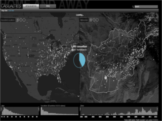
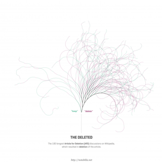
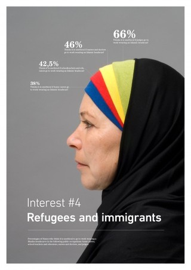
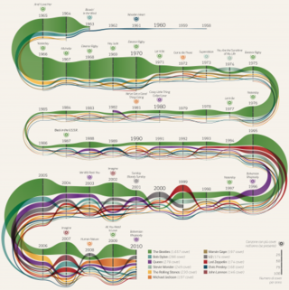
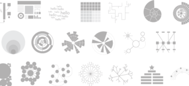
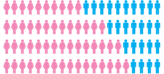

Fri, 28 Sep 2012 18:09:14 +0000
Information is Beautiful Awards – The Results Are In!
Information is Beautiful Awards – The Results Are In!
Last night, at a packed party venue in London, we announced the winners of the inaugral Information is Beautiful Awards. Thank you to all our amazing judges, supporters, staff and our ever generous sponsors Kantar. And the biggest high-five to the 1000+ talented people who courageously entered their work. Below are the categories winners. See [...]
Last night, at a packed party venue in London, we announced the winners of the inaugral Information is Beautiful Awards. Thank you to all our amazing judges, supporters, staff and our ever generous sponsors Kantar. And the biggest high-five to the 1000+ talented people who courageously entered their work.
Below are the categories winners. See the complete list here.
Data Journalism

Gold: CNN Home & Away, Stamen
Silver: Government Spending, Guardian data and graphics teams
Bronze: Metallica on Stage, Deniz Cem Önduygu, Amaç Herdağdelen, Eser Aygün
Interactive Visualisation

Gold: Notabilia, Moritz Stefaner, Dario Taraborelli, Giovanni Luca Ciampaglia
Silver: The American Energy Spectrum, Hyperakt, Deroy Peraza, Eric Fensterhei
Bronze: Evolution of Web, Hyperakt, Deroy Peraza, Eric Fensterhei
Data Visualisation

Gold: Information graphics in context, Peter Ørntoft
Silver: Look at the sky, Carla Fernandez / Arce
Bronze: Lunar calendar, Dimitre Lima
Infographic/Infodesign

Gold: Cover mania, Michele Mauri
Silver: Envisioning emerging technology for 2012 and Beyond, Michell Zappa
Bronze: Paulo Estriga CV, Paulo Estriga
Motion Infographic
Gold: Afghanistan – What is the true cost of war?, Peter Jeffs, Tom Stevenson
Silver: Stuxnet: Anatomy of a virus, Patrick Clair, Scott Mitchell
Bronze: Economist – The Seventh Billion, Economist.com team
Tool or Website
Gold: The Antimap, Trent Brooks
Silver: FF Chartwell, Travis Kochel and FontFont
Bronze: Gephi, Mathieu Bastian, Sébastien Heymann, Mathieu Jacomy
See more details on the special awards and the overall winner
Thu, 20 Sep 2012 15:47:33 +0000
I really need your help here…
I really need your help here…
We’re in the final stages voting for the winners of the Information is Beautiful Awards – and I really need your brains. The votes from the official judges votes are in – and man, it’s so tight. We’re biting our nails down to the wrist. The community acts as a meta-judge on the panel. Your [...]
We’re in the final stages voting for the winners of the Information is Beautiful Awards – and I really need your brains.
The votes from the official judges votes are in – and man, it’s so tight. We’re biting our nails down to the wrist.
The community acts as a meta-judge on the panel. Your votes will literally tip the balance one way or another.
You get just one vote, for one piece across the whole awards. So I recommend zooming in on a shortlist category you’re interested in, and slamming the ‘vote now’ button on your favourite piece. It’ll take 2 minutes.
» Data visualization
» Infographic
» Interactive visualization
» Data journalism
» Motion infographic
» Tool or website
Voting closes midday GMT on Monday 24th September 2012.
Thank you!
David
Win a ticket to our awards ceremony!
The winners will be announced at a party at the ICA in London on Thursday 27th September, starting 7pm GMT. Hosted by our kind sponsors Kantar.
We have 10 x free tickets to give away. You have to be free and in London on that date to apply. Just slam your email address below. We’ll pick winners at random on Monday.
http://bit.ly/Imthere
Tue, 21 Aug 2012 18:04:22 +0000
Announcing our visualization awards shortlist…
Announcing our visualization awards shortlist…
I’d like to invite you to review the official shortlist of the inaugural Information is Beautiful Awards. Our global contest is out to showcase excellence in data visualization and infographics. I think the list shows off some of the best work of the last year. Over 1,000 entries from 16 countries were agonizingly whittled down [...]

I’d like to invite you to review the official shortlist of the inaugural Information is Beautiful Awards.
Our global contest is out to showcase excellence in data visualization and infographics. I think the list shows off some of the best work of the last year.
Over 1,000 entries from 16 countries were agonizingly whittled down to a 300 strong longlist. (It makes a great browse if you’re looking for inspiration or to trawl trends).
Big thanks to everyone who entered and supported. Such a great honour to see so much flourishing creativity in one place.
Then, with much toil and heartache, we managed to boil down each of the six categories to a shortlist – of the best, most representative, most emblematic and most excellent work.
See for yourself
» Data visualization – A singular visualisation of data or information.
» Infographic – Using multiple data visualisations in service to a theme or story
» Interactive visualization – Any viz where you can dynamically filter or explore the data.
» Data journalism – A combination of text and visualizations in a journalistic format.
» Motion infographic – Moving and animated visualizations along a theme or story.
» Tool or website – Online tools & apps to aid datavizzing.
what happens next?
Right now, our awesome judges – including legendary artist Brian Eno, MoMA curator, Paola Antonell and myself – are reviewing the work and making their selections.
Alongside our beloved sponsors Kantar, we’ll be announcing the winners at a ceremony in London on September 27th and giving away $30,000 in prize money.
Fri, 06 Jul 2012 10:35:30 +0000
Punytive Damages? World’s Biggest Corporate Fines
Punytive Damages? World’s Biggest Corporate Fines
Bad week for mega-corps. GlaxoSmithKline facing a $3 billion settlement for fraud (link) . Barclays hit with a $450 million penalty for manipulating interest rates (link). But are these punishments proportional to the crime? After all, one company’s million-dollar fine is another corporation’s small change. We’ve gathered and visualized the biggest corporate fines of the [...]
Bad week for mega-corps. GlaxoSmithKline facing a $3 billion settlement for fraud (link) . Barclays hit with a $450 million penalty for manipulating interest rates (link).
But are these punishments proportional to the crime? After all, one company’s million-dollar fine is another corporation’s small change.
We’ve gathered and visualized the biggest corporate fines of the last seven years, not just as raw amounts, but also as a percentage of each company’s profits. That way you can see for yourself if the punishment was painful or puny…
See the visualization
See the data
These settlements are scattered and hard to find. So let us know if we missed any.
concept & design: David McCandless
additional design: Kathryn Ariel Kay, Piero Zagami
research: Dan Hampson, Christian Miles
sources: various company reports & media stories (NY Times, BBC, The Guardian, The Washington Post)
data: http://bit.ly/punytive
Tue, 22 May 2012 22:35:24 +0000
Chicks rule?
Chicks rule?
Back in 2010 we calculated there were 74 million more women on social networks than men. We’ve had a fresh look at the data. In the age of Facebook, Pinterest and Instagram, do chicks still rule? » See the new diagram » See the old diagram DESIGN: David McCandless RESEARCH: Dan Hampson ADDITIONAL DESIGN: Piero [...]

Back in 2010 we calculated there were 74 million more women on social networks than men. We’ve had a fresh look at the data. In the age of Facebook, Pinterest and Instagram, do chicks still rule?
» See the new diagram
» See the old diagram
DESIGN: David McCandless
RESEARCH: Dan Hampson
ADDITIONAL DESIGN: Piero Zagami, Tatjana Dubovina
SOURCE: Google Ad Planner
DATA: BIT.LY/CHICKSRULE